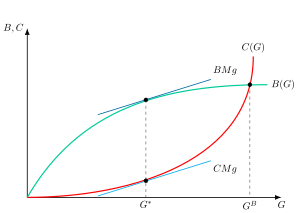
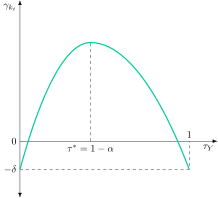

Apuntes para la oposición al Cuerpo de Diplomados Comerciales del Estado
17 El gasto público. Razones de su crecimiento. Teoría de la burocracia y constitución fiscal. El debate sobre el tamaño del Sector Público, en lo referente al gasto.
17.1 Introducción  1'
1'
La Economía del Sector Público estudia la intervención del Sector Público en una economía de mercado fundamentada en programas de ingresos y gastos con el objetivo de cumplir con sus funciones
Asignativa, dirigida a corregir fallos de mercado.
Distributiva, para conseguir equidad.
Crecimiento y estabilización, para suavizar las fluctuaciones cíclicas.
Para llevar a cabo estas funciones, el Sector Público tiene que decidir los niveles de gasto e impuestos que deben resultar óptimos desde el punto de vista colectivo.
Concretamente, durante gran parte del siglo XX, la expansión del Estado del Bienestar fue la norma, impulsada por la creencia de que un mayor gasto público en servicios sociales era esencial para la equidad y la provisión de bienes preferentes.
Sin embargo, a partir de la crisis de los años 70 y 80, esta expansión comenzó a ser cuestionada. El estancamiento económico y el aumento de la deuda desataron una crítica a la ineficiencia del Estado y a la sostenibilidad de sus finanzas, lo que llevó a la necesidad de controles fiscales más estrictos.
No obstante, la reciente crisis de la COVID-19 ha reavivado este debate de manera drástica:
Por un lado, la intervención sin precedentes del sector público, a través de medidas como los ERTEs, los fondos Next Generation y el programa REACT-EU, demostró la capacidad del Estado para responder a emergencias.
Por otro lado, esta masiva movilización de recursos ha disparado la deuda pública de muchos países, como España, por encima del 100% del PIB.
Por tanto, el objetivo de la presente exposición será el estudio del crecimiento del gasto público, con especial referencia a la teoría de la burocracia y al mecanismo corrector de la Constitución Fiscal a través del siguiente esquema:
Teorías explicativas del aumento del gasto público, desde una óptica de demanda y oferta.
Debate sobre el tamaño del Sector Público, donde se realizará una revisión histórica sobre el tamaño óptimo.
La Constitución fiscal, como límite al crecimiento desmedido del Sector público.
17.2 Teorías que explican las causas del aumento del Sector Público 10'
A lo largo del siglo XX se ha observado que la mayoría de los países, a medida que han ido progresando en su desarrollo económico, han aumentado el porcentaje de la renta que dedican a usos públicos. En la literatura hacendística se han sugerido diversas teorías acerca de por qué crece el gasto público. A grandes rasgos, estas teorías se pueden dividir en dos grandes grupos: teorías de demanda y teorías de oferta.
Teorías de la Demanda
Se comenzará el análisis con las teorías de la demanda.
Leyes de Wagner
Las leyes de Wagner (Wagner 1883,1890)1, revisadas por Bird (1971), explican el crecimiento del Gasto Público como consecuencia de 2 leyes:
Reestructuración de la Sociedad: la transformación de una sociedad tradicional en una sociedad industrializada moderna conlleva la sustitución de actuaciones privadas –institución de familias o grupos sociales– por actuaciones públicas. En sociedades avanzadas aparecen nuevas necesidades (demanda de bienes públicos y el mantenimiento de la ley y el orden) y la necesidad de corregir externalidades y monopolios naturales.
Aparición de nuevas necesidades (públicas): el aumento de la renta per cápita estimula el consumo de ciertos bienes y servicios provistos por el Sector Público –educación, sanidad, carreteras...– cuya demanda se incrementa más que proporcionalmente, es decir, con una elasticidad-renta superior a la unidad, por lo que aumenta la proporción del PIB que se dedica a ellos. Por consiguiente, estos bienes tendrían el carácter de bienes de lujo —el reverso, en términos de reparto del presupuesto, de la Ley de Engel (Engel 1857), que muestra cómo la proporción de la renta dedicada a bienes de primera necesidad, como la alimentación, desciende a medida que la renta aumenta.
Sin embargo, la teoría de Wagner suscitó críticas como la de Timm (1961), que señala su carácter valorativo, ya que Wagner parte de que la actuación pública es preferible a la privada y la necesidad de intervención es discutible, por lo que la teoría descansa en juicios de valor. Por otro lado, no se explica a partir de qué momento el gasto público tiende a crecer ni las variables que han intervenido en el proceso.
Transformaciones de Musgrave
Al igual que Wagner, Musgrave (1959) señala que el desarrollo económico de una sociedad genera una serie de transformaciones estructurales que tienden a elevar el gasto público:
Transformaciones demográficas: la reducción de la natalidad y el aumento de la esperanza de vida modifican la pirámide poblacional, presionando al alza partidas como las pensiones o la sanidad.
Transformaciones tecnológicas: los avances técnicos pueden requerir la presencia del sector público en ámbitos antes inexistentes —el desarrollo del automóvil exigió, por ejemplo, una red pública de carreteras, del mismo modo que el despliegue de la banda ancha ha exigido la extensión pública de la fibra óptica a las zonas rurales para evitar la brecha digital.
Transformaciones urbanísticas: la mayor urbanización exige equipamientos —zonas verdes, saneamiento, redes de recarga para vehículos eléctricos— innecesarios en un entorno rural.
Efecto desplazamiento
Por su parte, en un estudio para Reino Unido Peacock y Wiseman (1961) señalan que el gasto público aumenta de forma discontinua como consecuencia de conmociones o perturbaciones sociales –guerras o crisis– o naturales –catástrofes– tras las cuales el gasto no retorna a su magnitud inicial. Un ejemplo reciente a escala global fue la pandemia de la Covid-19.
En este proceso identifican 3 efectos:
Desplazamiento: ante una crisis o “conmoción social”, los contribuyentes están dispuestos a aceptar niveles impositivos que no habrían aceptado en condiciones normales, lo que permite financiar un mayor gasto público, produciéndose un efecto desplazamiento. Con la vuelta a la normalidad, la tolerancia a impuestos más elevados no regresa a su nivel previo y el gasto público continúa en un nivel superior al inicial, ya que ha posibilitado el acceso a niveles de gasto público deseados pero anteriormente reprimidos por la resistencia a un aumento de la presión fiscal.
Inspección: las perturbaciones sociales hacen que los ciudadanos descubran necesidades sociales y ámbitos en los que la actuación del Sector Público era insuficiente, por lo que están dispuestos a soportar una mayor carga fiscal para atenderlos.
Concentración: ante dichas perturbaciones se produce un transvase de funciones de las administraciones locales a la Central por considerar que esta actúa de manera más eficaz.
Redistribución de la renta
Por otro lado, autores como Downs (1957) o Romer y Rosenthal (1979) plantean que el gasto público en una sociedad democrática tiende a crecer por la competencia entre los partidos políticos por los votos. En un contexto de distribución desigual de la renta, el votante mediano, con una renta inferior a la renta media, demandará políticas de redistribución, por lo que los partidos políticos tenderán a aproximar sus programas electorales a las preferencias del votante mediano.
Grupos de interés
Adicionalmente, Buchanan y Tullock (1962) plantean que los grupos de interés –caracterizados por ser pequeños y organizados, con intereses comunes y fuerte preferencia y beneficios de la consecución de sus intereses y objetivos– tratarán de modificar la actuación del Sector Público hacia sus intereses particulares, aumentando el gasto público en programas de naturaleza cuasiprivada, pero que son financiados por toda la población.
Ilusión fiscal
Finalmente, la teoría de la ilusión fiscal de Buchanan y Wagner (1977) explica que el aumento del gasto público se debe a que los ciudadanos están bajo ilusión fiscal, es decir, consideran que el coste del gasto público en términos de impuestos es inferior al coste efectivo, debido a los costes de información y la complejidad del sistema impositivo y fiscal.
Teorías de Oferta y Demanda
Por otro lado, antes de pasar a analizar las teorías de oferta, analizaremos como caso híbrido particular la teoría de la enfermedad de Baumol (1967) que explicaría el crecimiento del gasto público debido al efecto de los precios relativos crecientes y la existencia de una demanda con una reducida elasticidad-precio.
Así, parte de considerar que la mayor parte de los servicios prestados por el sector público son intensivos en trabajo, como podría ser la educación o la justicia:
Como consecuencia, los aumentos de productividad en el sector público son menores que en el sector privado, en el que es más fácil aumentar la productividad sustituyendo trabajo por capital.
Así, la productividad crece más despacio en el sector público. Sin embargo, los salarios del sector público crecen a un ritmo similar a los del sector privado.
Derivado de los dos puntos anteriores, el precio relativo de los bienes y servicios públicos aumenta progresivamente respecto a los privados. Esto es lo que se conoce como “enfermedad de Baumol”.2
No obstante, el aumento del precio relativo no es suficiente, en principio, para explicar el aumento del gasto público, pues podría ocurrir que, al aumentar el precio, la demanda disminuyese y el gasto total incluso se redujese. Sin embargo, Baumol señala que la demanda de los bienes y servicios públicos tiene una reducida elasticidad-precio. Por tanto, al aumentar el precio, la cantidad demandada apenas disminuye, lo que provoca un aumento del gasto.
Como crítica, esta teoría explica el aumento del gasto público nominal y, si la demanda es suficientemente inelástica, también el de su peso en el PIB nominal, pero no el aumento del gasto público en términos reales, es decir, de la cantidad de servicios públicos efectivamente provista.
Teorías de Oferta
A continuación se analizarán las teorías del crecimiento del gasto público por el lado de la oferta.
Presupuesto incrementalista
Comenzando por la teoría del presupuesto incrementalista de Wildavsky (1964) se basa en la idea de que la asignación de fondos para los programas de gasto público se realiza tomando como referencia el presupuesto del año anterior para decidir si se incrementa o se reduce el importe del gasto. Por consiguiente, se trata de una regla de decisión incrementalista que explica el aumento del gasto público en función de las decisiones pasadas.
Analíticamente, la unidad administrativa al realizar su petición de fondos para el año \(t\), \(x_{t}\), toma como referencia los fondos que recibió en el ejercicio anterior, \(y_{t-1}\): \[x_{t}=\beta\cdot y_{t-1}+u_{t},\quad\beta>1 \tag{17.1}\] donde \(\beta\) es superior a 1 y representa el parámetro con el que la unidad administrativa ajusta su petición de fondos a la dotación del año anterior, reflejando el interés en incrementar el presupuesto. Además, el término \(u_{t}\) es una perturbación aleatoria que refleja factores no previstos que hacen que se incremente el presupuesto.
Por su parte, el Ministerio de Hacienda , cuando recibe los anteproyectos parciales de cada departamento para elaborar el presupuesto agregado, \(y_{t}\), ajusta a la baja dichas solicitudes, concediendo una fracción \(\alpha\), que es inferior a 1, de las mismas: \[y_{t}=\alpha\cdot x_{t}+v_{t},\quad\alpha<1 \tag{17.2}\] donde \(v_{t}\) representa otra perturbación aleatoria.
El resultado, sustituyendo la regla de petición de fondos en la de dotación de fondos, es que el presupuesto dependerá del valor de \(\gamma=\alpha\cdot\beta\), que será más probable que sea superior a la unidad y por lo tanto incrementalista cuanto mayores sean las solicitudes de fondos respecto al año anterior, \(\beta\), y cuanto mayor sea la permisividad del Ministerio de Hacienda, \(\alpha\): \[y_{t}=\gamma\cdot y_{t-1}+z_{t} \tag{17.3}\] donde \(z_{t}=\alpha\cdot u_{t}+v_{t}\) combina las dos perturbaciones anteriores, la primera ponderada por la fracción concedida por Hacienda.
No obstante, el enfoque de Wildavsky plantea limitaciones. Concretamente, Williamson (1967) critica que las reglas de fijación de gasto solo dependen de las decisiones pasadas y no tienen en cuenta la existencia de procesos económicos y políticos que afectarán a los valores de los parámetros \(\alpha\) y \(\beta\) y que no están contemplados en la teoría.
Teorías de la burocracia
Por otro lado, las teorías de la burocracia se centran en el papel de los burócratas y funcionarios en generar incrementos de gasto público
Comenzando con la teoría de la burocracia de Niskanen (1971), parte de considerar que, al igual que en el sector privado la empresa trata de maximizar beneficios, en el sector público, los burócratas tendrán como objetivo maximizar su utilidad privada.
Sin embargo, a diferencia del caso de una empresa, dada la naturaleza de su trabajo y las restricciones a las que se enfrenta el burócrata no podrá beneficiarse del mercado para elevar su renta. Por el contrario, obtendrá utilidad de otros factores que se pueden sintetizar suponiendo que la utilidad del burócrata dependerá del tamaño del presupuesto: a mayor presupuesto mayor utilidad, pues un mayor presupuesto le reportará un mayor prestigio, reputación e influencia. Así, los burócratas utilizarán cierto poder de monopolio para imponer sus preferencias sobre gasto a un legislador poco informado, al existir información asimétrica.
Gráficamente, la teoría de la burocracia puede analizarse en un plano como el de la Figura 17.13, que representa en el eje vertical el beneficio para el político de la provisión de un bien público, \(B\), y su coste de provisión, \(C\), y en el eje horizontal el nivel de producción del bien público, \(G\), que suministra un departamento. La función de costes del bien público, \(C\left(G\right)\), es creciente con el nivel de producción, con un coste marginal positivo y creciente. Dicha función no es conocida por el político y solo el burócrata conoce el proceso de provisión del bien público y, por tanto, su coste.
Por otro lado, la función de beneficios para el político de la provisión del bien público, \(B\left(G\right)\), es creciente pero con un beneficio marginal positivo pero decreciente. Dicha función de beneficios representaría la utilidad del consumo del bien público que obtienen los votante y que redundaría en mayores posibilidades de reelección del político.
Con información perfecta, es decir, si el político conociese los costes de provisión, el equilibrio se alcanzaría para un nivel del bien público \(G^{*}\) en el que se iguale el coste marginal de provisión, dado por la pendiente de la tangente a la curva de costes para dicho nivel de gasto público, con el beneficio marginal, representado, a su vez, por la pendiente de la tangente a la curva de beneficios.
Sin embargo, el burócrata, cuyo objetivo es maximizar el presupuesto, no tiene incentivos para revelar la información sobre el coste de provisión, lo que impide que el nivel de provisión sea \(G^{*}\). Ahora bien, se enfrenta a la restricción de que el coste de provisión no supere al beneficio que se obtiene del bien público, ya que el político no quiere un proyecto con beneficio neto negativo, \(B\left(G\right)\geq C\left(G\right).\)
Por otro lado, si el burócrata elige un nivel de provisión en el que el coste es inferior al beneficio, \(B\left(G\right)>C\left(G\right)\), estaría renunciando a un aumento del presupuesto. Por ello, dadas estas restricciones, el burócrata elige el nivel de provisión del bien público \(G^{B}\), en el que el beneficio total iguala al coste total, \(B\left(G^{B}\right)=C\left(G^{B}\right)\), y que es superior al que se suministraría si no existiera información asimétrica.

Por lo tanto, el comportamiento de la burocracia llevaría a un aumento del gasto público y del presupuesto, que se vería incrementado aún más por la sobrestimación de los beneficios y de las estimaciones de costes.
Este crecimiento excesivo del gasto público generaría una ineficiencia en la asignación de recursos, ya que se destinan recursos, como consecuencia del comportamiento de la burocracia, que no producen resultados lo suficientemente valiosos. Además, se produce la llamada ineficiencia X, debido a la falta de presión competitiva que hace que no se utilicen las técnicas más eficientes para producir, generándose así una ineficiencia productiva.
Las soluciones a estos problemas de ineficiencia pasarían por:
Reforzar las mayorías necesarias para aprobar los programas de gasto público.
Introducir competencia entre el sector público y el sector privado.
Remunerar al burócrata y funcionarios de acuerdo a su productividad marginal. Sin embargo, esto resulta difícil ya que la producción del sector público no se vende en el mercado, sino que suele valorarse al coste de los factores.
Separar el diseño de la ejecución (por ejemplo, encargar el análisis coste-beneficio a una agencia independiente, de manera que el sector público no pueda ya subestimar los costes y sobrestimar los beneficios de los proyectos públicos).
Individualizar las responsabilidades de los burócratas para evitar que se diluyan.
Presupuestos de base cero, en lugar de presupuesto incremental.
Limitar el tamaño del sector público, mediante la implementación de la constitución fiscal que veremos más adelante.
También cabe señalar que la teoría de la burocracia asume que no existen restricciones al comportamiento de los burócratas. Sin embargo, estas pueden venir dadas por presiones políticas o demandas de los ciudadanos.
Además, hay que destacar otras dos teorías de la burocracia que analizan a los empleados públicos como votantes:
Bush y Denzau (1977) plantean la importancia del comportamiento como votantes de los empleados públicos, los cuales tenderán a favorecer a los partidos cuyos programas propongan un aumento del gasto público, de los salarios públicos o una mayor estabilidad en el empleo público. La importancia de este efecto para explicar el incremento del gasto público dependerá del porcentaje que representen los empleados públicos sobre el total de votantes. Un ejemplo de esto se encuentra en España, con las crecientes Ofertas de Empleo Público4.
Frey y Pommerehne (1982) destacan que este efecto se puede ver amplificado ya que los empleados públicos tenderían a tener unas mayores tasas de participación electoral, de forma que tienden a tener un mayor peso entre los votantes que entre la población general.
Teorías del ciclo político
Las teorías del ciclo político destacan la influencia de los procesos electorales y el objetivo de conseguir la reelección sobre la evolución del gasto público.
El planteamiento inicial de Nordhaus (1975) considera que si los votantes son miopes, es decir, deciden su voto en función de los resultados económicos obtenidos en el pasado reciente y sus expectativas son estáticas, el gobierno en el poder podría tener un comportamiento oportunista para aplicar políticas expansionistas. Dichas políticas darían lugar a incrementos del gasto público para generar una fase expansiva que corresponda con la duración de la legislatura, con una fase máxima de expansión justo antes de las elecciones.
No obstante, la capacidad del gobierno de aplicar políticas de demanda expansivas con objetivos electorales dependerá de la frecuencia electoral y de la existencia de poderes compensadores fuertes como un banco central independiente, limitación de mandatos, mayorías cualificadas o parlamentos fragmentados. Por otro lado, esta teoría se critica ya que implica que el gobierno tiene un gran control sobre la amplitud y la sincronización de los ciclos económicos.
Empíricamente, Frey y Schneider (1981) encuentran que existe evidencia según la cual unas condiciones económicas positivas mejoran la popularidad del gobierno en el poder, pero Alesina et al. (1997) concluyen que no hay evidencia de que el output y el desempleo sigan un ciclo político, pero la inflación sí tiende a incrementarse antes de las elecciones, lo que se puede explicar por las políticas expansivas para mejorar las perspectivas electorales.
Ideología del partido gobernante
Por otro lado, Cameron (1978) y Castles (1982) plantean que las diferencias ideológicas entre los partidos progresistas y conservadores reflejan una diferencia en las preferencias colectivas por la provisión pública.
Concretamente, los modelos de ideología del partido gobernante consideran que los partidos tienen diferentes funciones de pérdida dependiendo de la ideología5:
Progresistas: tienden a favorecer un mayor gasto público, especialmente en áreas como el bienestar social, la sanidad y la educación, para lograr una mayor redistribución de la riqueza y reducir la desigualdad.
Conservadores: tienden a abogar por un menor gasto público, una reducción de impuestos y la liberalización económica, priorizando la eficiencia del mercado.
Sin embargo, esta teoría no está exenta de críticas. Así, en los países desarrollados existen restricciones institucionales, las preferencias del votante mediano6 o las coaliciones, donde la ideología del partido mayoritario puede verse diluida por las exigencias de sus socios.
Descentralización del poder político
Por su parte, Tarschys (1975) propone que la descentralización puede dar lugar a un crecimiento del gasto público, ya que si no existe una división clara entre las competencias de los distintos niveles de gobierno se pueden producir solapamientos y duplicidades.
Además, la descentralización facilitaría el incremento del gasto público por la dependencia de los gobiernos subcentrales de las transferencias a través del llamado efecto papel matamoscas, que implica que una transferencia incondicional de una unidad monetaria a una jurisdicción da lugar a un aumento del gasto público mayor que el que generaría un aumento de una unidad monetaria en la renta privada de sus residentes.
Adicionalmente, si existe ilusión fiscal, de modo que el aumento de gasto público del gobierno subcentral no incrementa el precio de su provisión y la población no conozca el coste real del gasto al financiarse mediante transferencias, se reforzará la tendencia al crecimiento del gasto público.
No obstante, cabe señalar como crítica que la descentralización del poder político podría ayudar a reducir el gasto público al permitir que se alcance una asignación de recursos más eficiente, pues los niveles inferiores de Gobierno conocen mejor las preferencias de los individuos.
17.3 Debate sobre el tamaño del Sector Público4'30"
El análisis de todas las teorías anteriores no constituye un todo integrado, pero ofrecen distintas explicaciones a la tendencia creciente del gasto. Esto hace que surja un debate sobre si el crecimiento del gasto público es excesivo y sobre cuál es el tamaño óptimo del sector público.
Dicho debate está presente en toda la historia del pensamiento sin que exista una conclusión única, sino que las distintas escuelas de pensamiento con distinta relevancia histórica plantean diferentes enfoques
Fisiócratas
El objetivo de los fisiócratas del siglo XVIII era el desarrollo económico y centran su atención en la agricultura actividad que consideran como generadora de crecimiento y riqueza. Por consiguiente, el papel del sector público sería:
La organización de cultivos mediante la sustitución de terratenientes por burguesía para capitalizar las explotaciones
La defensa de las libertades económicas.
Los gastos deberían ser solamente los indispensables para fomentar la producción agraria, como la seguridad o las obras públicas, y dicho gasto se financiarían mediante impuestos sobre la agricultura, se trataría de un único impuesto sobre el sector que se considera productivo.
La Teoría de la Hacienda Pública Clásica
La escuela clásica considera que el crecimiento económico a largo plazo solo es posible debido a la acción del libre mercado. Por ello, el Estado solo debería intervenir para permitir y fomentar la actividad del mercado es decir, la competencia y la acumulación de capital que actúan como fuerzas impulsoras del crecimiento.
Adam Smith en el Libro V de su obra “La Riqueza de las Naciones” (Smith 1776) establece los principios que considera deberían guiar la intervención del sector público:
Respecto al gasto público, Smith plantea que el sector público debería realizar gastos de defensa y diplomacia así como los necesarios para mantener la seguridad y el orden público y la financiación de la justicia. Además, también debería financiar las obras públicas no rentables para la iniciativa privada.
Por lo que se refiere a los impuestos deben ser neutrales, para no afectar al crecimiento económico, y exigirse con certeza, economicidad y comodidad. Smith se muestra contrario a la imposición sobre el ahorro, que afectaría a la financiación de la acumulación de capital, y define la justicia impositiva de acuerdo a:
El principio de beneficio: según el cual el pago de impuestos tiene que estar en función del beneficio disfrutado bajo la protección del Estado.
El principio de capacidad de pago: según el cual la contribución debe realizarse en función de la renta, independientemente de los beneficios que se obtengan de la intervención del Estado.
Finalmente, Smith propugna el equilibrio presupuestario entre gastos e ingresos públicos lo que limitará el tamaño del Estado. La necesidad del equilibrio presupuestario se justifica por dos tipos de razones:
Razones económicas: evitar que la existencia de déficit pueda condicionar las decisiones de acumulación de capital y de trabajo.
Razones políticas ya que el déficit sería un elemento distorsionador en las decisiones políticas.
No obstante, plantea como excepción la regla de oro de la Hacienda Pública clásica que admite la existencia de déficit para financiar las inversiones que sean autoliquidables, es decir, aquellas cuya rentabilidad permite pagar intereses y reembolsar los préstamos.
Cabe destacar que dentro de la escuela clásica otros autores plantean ciertos matices sobre los postulados de Smith:
Malthus(1820) plantea la posibilidad de que existan insuficiencias de la demanda efectiva, que podría corregirse con el incremento del gasto público.
John Stuart Mill(1848) y Bentham(1789) destacan la importancia de asegurar la igualdad de oportunidades, para lo que sería necesario introducir figuras impositivas como la imposición sobre la herencia.
La Hacienda Pública Alemana
Del mismo modo, la Hacienda Pública Alemana acepta los principios presupuestarios clásicos pero plantea una distribución del gasto diferente, ya que se opone al individualismo liberal y propugna un programa de reformas sociales y políticas fiscales distributivas como medio para incrementar el bienestar social. Así, el gasto se debería dirigir también al impulso al desarrollo y la corrección de las desigualdades sociales.
La Escuela Marginalista y la Neoclásica
Por otro lado, la teoría de la economía del bienestar desarrollada por Marshall, Pigou y Edgeworth define la necesidad de la intervención del Estado en aquellas situaciones en las que la competencia no consiga maximizar el bienestar.
Así, el tamaño del sector público estaría determinado por el hecho de que los ingresos y gastos públicos deberían ser suficientes para contribuir a corregir los fallos de la asignación de recursos y a mejorar la distribución de la renta. Esto exige conocer los efectos de impuestos y gastos públicos para evitar los efectos desincentivos y aplicar un criterio de justicia fiscal basada en la maximización del bienestar social y en el principio igualdad de sacrificio
La Hacienda Pública Keynesiana
Keynes en su obra la “Teoría General de la Ocupación, el Interés y el Dinero” (Keynes 1936) plantea el rechazo de la Ley de Say, aceptada por los economistas clásicos, así como de otros postulados clásicos y defiende la necesidad de la intervención del sector público para estabilizar la economía mediante el incremento de la demanda agregada, a través del aumento del gasto público que actuaría como un mecanismo para incrementar la renta y reducir el desempleo.
Por consiguiente, la estabilización macroeconómica justificaría el aumento del gasto público y del tamaño del sector público. Keynes considera que la acción única de las fuerzas de mercado no conduce por sí sola a un equilibrio de pleno empleo y que la política fiscal sería más efectiva que otras políticas económicas para estabilizar la economía y generar expansiones de la renta, vía efecto multiplicador.
No obstante, la teoría keynesiana se enfrenta a una serie de críticas como la existencia de efectos crowding-out, por los que la actividad del sector público expulsa la actividad privada, las limitaciones del sector público por el funcionamiento de la burocracia, los problemas de información y de revelación de preferencias y las dudas de la efectividad de la política fiscal en un contexto de expectativas racionales
A pesar de las críticas, la teoría keynesiana constituyó la corriente dominante de pensamiento económico desde la Segunda Guerra Mundial hasta los años 70, por lo que la política fiscal se convierte en elemento de estabilización de la economía y, en conjunción con la política monetaria, se utilizan para evitar la inestabilidad del mercado que genera inflación y desempleo y estimular la demanda efectiva de modo que aumente la renta y el empleo.
La síntesis de Musgrave
Por otro lado, Musgrave (1959) incorpora el pensamiento económico keynesiano y la economía del bienestar para justificar que sector público debe intervenir en la economía por tres razones:
Función de asignación, es decir, alcanzar la eficiencia corrigiendo fallos de mercado, de acuerdo con la visión neoclásica.
Función de distribución, para conseguir la equidad, según la visión de autores como Mill, Wagner o Wicksell.
Función de estabilización, para suavizar las fluctuaciones cíclicas, de acuerdo con la visión keynesiana.
Este enfoque de Musgrave es la base del desarrollo del Estado del Bienestar y del incremento del gasto público en las economías occidentales en los años 60 y 70.
El enfoque del crecimiento económico
Frente al enfoque normativo de Musgrave sobre las funciones del Sector Público, la literatura del crecimiento económico ofrecería, ya en los años 90, una respuesta positiva y formal a la pregunta del tamaño óptimo. Barro (1990) amplía un modelo de crecimiento endógeno incorporando los servicios públicos, \(g\), como un input productivo de la función de producción privada, de forma que la tasa de crecimiento del capital, \(\gamma_{k_{t}}\), depende de la ratio de gasto público sobre el PIB, \(\tau_{Y}=g/Y\).
Un aumento de \(\tau_{Y}\) tiene dos efectos de signo contrario sobre el crecimiento: por un lado, eleva la productividad marginal del capital privado al complementarlo con más servicios públicos; por otro, exige una mayor imposición distorsionadora para financiarlo. El primer efecto domina cuando el Sector Público es pequeño y el segundo cuando es grande, por lo que la relación entre \(\tau_{Y}\) y \(\gamma_{k_{t}}\) tiene forma de U invertida (Figura 17.2). Bajo una tecnología Cobb-Douglas, \(y=A\cdot k^{\alpha}\cdot g^{1-\alpha}\), con \(\alpha\) la elasticidad-producto del capital privado, el tamaño del Sector Público que maximiza el crecimiento coincide con la elasticidad-producto de los servicios públicos, \(\tau^{*}_{Y}=1-\alpha\): el Estado maximiza el crecimiento fijando su participación en el PIB igual a la que tendrían los servicios públicos si se contratasen de forma competitiva.

Esta relación en forma de U invertida entre tamaño del Sector Público y crecimiento se popularizaría después de forma más empírica como curva de Armey, o curva BARS —por Barro, Armey, Rahn y Scully—, que estima directamente el punto de máximo crecimiento a partir de datos reales. En esta línea, Vedder y Gallaway (1998) estiman para Estados Unidos un tamaño óptimo del Sector Público en torno al 17,5% del PIB, sensiblemente inferior al gasto público efectivo del país.
17.4 La Constitución Fiscal 4'
Precisamente, la crisis económica de los años 70 hace que se cuestione el tamaño de sector público, es la denominada por Tarschys (1983) como “crisis de las tijeras”7:
Por el lado de los impuestos, se reducen los ingresos debido a la evasión, a los costes de control y los efectos desincentivos.
Por el lado del gasto, aumenta el gasto público debido a la crisis económica que incrementa los gastos del Estado del Bienestar, lo que junto al reducido crecimiento de la productividad marginal de sector público llevan a problemas de sostenibilidad y a la llamada crisis del Estado de Bienestar.
Por tanto, los problemas del Estado de Bienestar plantean el debate sobre la expansión excesiva del gasto público y del tamaño del sector público.
Así, Brennan y Buchanan (1980) plantean que el sector público se convertirá en un moderno Leviatán8 lo que dará lugar a la sobre-expansión de su actividad financiera y fiscal, generando la expulsión de la actividad privada ante la excesiva carga impositiva.
Como analizamos anteriormente, la sobre-expansión del sector público se derivaría del proceso de elección social, por la toma de decisiones de acuerdo a la regla de mayoría simple, la existencia de ilusión financiera y fiscal, el poder de monopolio de burócratas y la redistribución de la renta a través del presupuesto.
Brennan y Buchanan (1980) abordan la cuestión de la sobre-expansión de la actividad financiera y fiscal del sector público y, ante la incapacidad del votante para tener un control directo y regular sobre la actividad de los burócratas, plantean la necesidad de establecer límites constitucionales al “poder fiscal” del Estado.
De esta forma, la constitución fiscal es un mandato legal (a veces, constitucional) que establece límites a la discrecionalidad de la política fiscal (Brennan y Eusepi 2005) y protege, además, la equidad intergeneracional, al impedir que las generaciones presentes trasladen cargas excesivas a las futuras. Principios que deben guiar la constitución fiscal:
Realismo.
Consenso.
Flexibilidad.
Claridad y sencillez.
Modalidades de Constitución Fiscal
Existen diferentes modalidades:
Techo de déficit público: los presupuestos deben contemplar, en su elaboración y ejecución, un nivel de gastos que no sea superior al de ingresos (por ejemplo, el artículo 135 de la Constitución Española). Equilibrio presupuestario defendido por los clásicos y por Buchanan, siendo esta la regla y teoría más antigua9.
Techo de gasto público. Se puede definir un límite en términos absolutos o al crecimiento relacionado con algún índice (por ejemplo, la directriz agrícola del Paquete Delors de 1988, la regla de gasto de la LOEPSF de 2012 o la regla de gasto del PEC).
Techo a la capacidad de gravamen Brennan y Buchanan (1980). Plantean que el control sobre los burócratas por el lado del gasto es muy difícil, por lo que el control deberá ejercerse mediante límites al diseño de la estructura impositiva, para lo que proponen10:
Bases imponibles reducidas y elásticas de impuestos, que deben preferirse sobre bases amplias y menos sensibles.
Uniformidad impositiva, mediante una estructura proporcional para limitar los poderes del burócrata que puede alterar la progresividad para extraer excedente a los votantes.
Para asegurar la provisión eficiente de bienes públicos las bases impositivas deben ligarse a un servicio público complementario. Por ejemplo, el gasto en carreteras a la imposición sobre los carburantes.11
Principio de presupuesto equilibrado y límites a la imposición sobre el capital, para limitar la capacidad de los gobiernos actuales de extraer recursos de generaciones futuras.
Veto del Gobierno a partidas de aumento de gasto. Requisito de mayorías cualificadas.
Federalismo fiscal: correspondencia fiscal en los distintos niveles administrativos, de forma que tengan el mismo grado de autonomía por el lado del gasto que por el lado de los ingresos.
Competencia fiscal entre las administraciones del mismo nivel administrativo (por ejemplo, entre Comunidades autónomas, entre ayuntamientos, etc.), de manera que el “voto con los pies” de los ciudadanos les incite a limitar el crecimiento del gasto público para poder ofrecer una fiscalidad ventajosa.
Autoridades fiscales independientes. Al igual que han surgido autoridades monetarias independientes como los bancos centrales, ajenas al ciclo político, no sometidas a los grupos de presión y con un objetivo determinado, Alan Blinder (Blinder 2004) propone crear autoridades fiscales independientes con perfil técnico (por ejemplo, la AIReF o el Two-Pack).
Formalmente, y por analogía directa con el “banquero central conservador” de Rogoff (1985), cabe modelizar a esta autoridad fiscal conservadora como un agente que minimiza una función de pérdida cuadrática, \[\min_{d_{t}}L=\left(Y_{t}-Y^{*}\right)^{2}+\delta\cdot\left(d_{t}-d^{*}\right)^{2},\] donde \(d_{t}\) es el déficit público del período, \(d^{*}\) su objetivo de largo plazo, e \(Y_{t}\) el nivel de actividad, con su objetivo \(Y^{*}\). El parámetro \(\delta\) recoge la aversión de la autoridad al desvío respecto de su objetivo de déficit, igual que el parámetro análogo en el modelo de Rogoff recoge la aversión del banquero central al desvío de su objetivo de inflación: cuanto mayor sea \(\delta\), más se aproximará el déficit de equilibrio a su objetivo \(d^{*}\), corrigiendo el sesgo deficitario de la política discrecional, a costa de sacrificar parte de la capacidad estabilizadora automática del presupuesto ante perturbaciones coyunturales de la actividad.
Ejemplos de Constitución Fiscal
Albi Ibáñez et al. (2017) señalan los cambios legislativos efectuados en España, que incluyen:
La reforma del artículo 135 de la Constitución Española en 2011, que otorga rango constitucional al principio de estabilidad presupuestaria, que se vincula al cumplimiento de los límites máximos establecidos por ley para el déficit estructural del Estado y de las Comunidades Autónomas en relación con el PIB, y a la garantía de equilibrio presupuestario de las Entidades Locales. Asimismo, el artículo 135 establece que el volumen de deuda pública del conjunto de las Administraciones Públicas en relación con el PIB no podrá superar los límites establecidos por el Tratado de Funcionamiento de la Unión Europea, y concede prioridad absoluta al pago de los intereses y el capital de la deuda pública. Por último, la reforma constitucional introduce una cláusula de salvaguarda, por la cual los límites de déficit estructural y deuda pública pueden superarse con el apoyo de la mayoría absoluta de los miembros del Congreso en caso de circunstancias excepcionales (catástrofes naturales, recesión económica o situaciones de emergencia extraordinaria), que pongan en peligro la sostenibilidad económica o social del Estado.
La aprobación de la Ley Orgánica de Estabilidad Presupuestaria y Sostenibilidad Financiera (LOEPSF) en 2012, consagra los principios de estabilidad presupuestaria y sostenibilidad financiera y establece como principio rector el de plurianualidad, que exige que los presupuestos públicos se encuadren en un marco presupuestario a medio plazo (y del que se deriva la ya citada regla de gasto)12.
La creación de la Autoridad Independiente de Responsabilidad Fiscal (AIReF) en 2013, creada como instrumento dentro del marco de gobernanza reforzada de la UE , una de sus tareas consiste en la evaluación continua del ciclo presupuestario, como forma de velar por el estricto cumplimiento de los principios de estabilidad presupuestaria y sostenibilidad financiera, y somete a escrutinio la actividad fiscal y presupuestaria de las AA.PP.
En el ámbito europeo junto con la reciente reforma de las reglas fiscales en 202413:
Pacto de Estabilidad y Crecimiento (PEC reformado 2024) El nuevo marco del Pacto de Estabilidad y Crecimiento busca un equilibrio entre la disciplina fiscal y la capacidad de los Estados miembros para invertir y realizar reformas. Su funcionamiento se basa en dos brazos, pero con un enfoque renovado.
Brazo Preventivo: El objetivo sigue siendo prevenir políticas fiscales insostenibles, pero ahora se centra en planes fiscales individualizados. Los países deben presentar Planes Fiscales y Estructurales de Medio Plazo que detallen una senda de ajuste fiscal.
Senda de gasto neto: La variable principal de seguimiento ya no es el MTO, sino el gasto público neto. Este se establece para cada país en función de su nivel de deuda y se acuerda con la Comisión Europea. El plan tiene una duración de 4 años, ampliable a 7 si se incluyen inversiones y reformas estratégicas.
Regla de gasto: La nueva regla de gasto es el pilar del brazo preventivo, ya que el control del gasto neto es la forma en que los países deben garantizar la sostenibilidad de sus finanzas.
Brazo Correctivo: Este brazo se activa cuando un país ya ha superado los umbrales de déficit o deuda.
Déficit y Deuda: Se mantienen los límites de referencia del 3% del PIB para el déficit y del 60% del PIB para la deuda. Si un país incumple estos límites, se activa un Procedimiento por Déficit Excesivo (PDE).
Ajuste estructural: El PDE exige un ajuste estructural mínimo del 0,5% del PIB anual hasta que el déficit se corrija. Sin embargo, la activación del PDE ahora también puede ocurrir si un país se desvía de su senda de gasto neto acordada.
Fiscal Compact (Tratado de Estabilidad, Coordinación y Gobernanza) El Fiscal Compact, que nació en 2012 para reforzar la disciplina fiscal, también se ha visto afectado por la reforma de 2024.
Objetivos del Fiscal Compact: Las nuevas reglas fiscales integran gran parte de los objetivos del Fiscal Compact en el marco general de la UE, incluyendo la regla de equilibrio presupuestario estructural. Esto significa que las reglas ahora tienen un estatus legal más sólido en el derecho de la UE.
Autoridades Fiscales Independientes: El rol de las autoridades fiscales independientes, como la AIReF en España, se ha reforzado. Estas instituciones son cruciales para supervisar el cumplimiento de las sendas de gasto y dar credibilidad a los planes fiscales de los gobiernos.
Mecanismo corrector automático: El principio del mecanismo corrector se mantiene, pero ahora se materializa a través de las sendas de gasto netas. Las desviaciones de esta senda activan mecanismos de corrección dentro del brazo preventivo o correctivo del nuevo marco fiscal.
17.5 Conclusiones30"
Como conclusión, en el debate sobre el tamaño del sector público existen 2 posturas:
Optimista: sostiene que el Estado es un garante esencial de servicios (sanidad, educación), corrige fallos de mercado y fomenta el progreso técnico y el capital humano. Por tanto, es clave para el desarrollo económico y la igualdad.
Pesimista: señala el problema del crowding-out (desplazamiento de la inversión privada), ineficiencias burocráticas y el riesgo moral derivado de los diferentes grupos de interés, por lo que el gasto público no siempre responde al interés general.
No obstante, la clave está en la evaluación del gasto y en la constante rendición de cuentas, por lo que el debate debe centrarse en la eficacia de las políticas públicas.
Apéndice
17.A.1. Reducción de gastos partida a partida
La reducción de gastos partida a partida consiste en el recorte selectivo de líneas concretas del presupuesto. Es el método más utilizado en la práctica —resulta política y administrativamente más sencillo que rediseñar el presupuesto en su conjunto—, pero también uno de los menos eficaces: la mayor parte del gasto público está comprometido de antemano por obligaciones legales o contractuales —pensiones, salarios públicos, servicio de la deuda—, por lo que los recortes recaen sobre una fracción reducida y discrecional del presupuesto. Las reducciones que resultan practicables son, en consecuencia, de escasa cuantía, y no logran por sí solas constituir un freno real al crecimiento global del gasto.
17.A.2. Presupuesto plurianual
La técnica del presupuesto plurianual sustituye la confección anual del presupuesto —uno de los principios de la Hacienda Pública clásica— por una programación a varios años vista. Frente al presupuesto anual, presenta la ventaja de visibilizar los costes futuros de los programas de gasto que se ponen en marcha, corrigiendo el sesgo de visión a corto plazo propio de la presupuestación año a año.
No obstante, la experiencia británica del Public Expenditure Survey Committee (PESC) (Clarke 1978) muestra que la presupuestación plurianual tampoco está exenta de inconvenientes:
Los compromisos de reducción del gasto adquiridos para los ejercicios futuros del ciclo plurianual rara vez se cumplen, por lo que raramente se traducen en una reducción efectiva del gasto del año en curso.
El papel de la inflación cobra especial importancia, sobre todo cuando la presupuestación se realiza en términos de volumen.
Resulta más difícil prescindir de un gasto determinado una vez que ya ha sido incluido en el presupuesto.
Cuanto más prolongado es el periodo de programación, menor es el control efectivo sobre el gasto.
La estabilidad de los organismos públicos exige, en ocasiones, renunciar a imponer límites estrictos en un año dado.
17.A.3. Presupuesto Base Cero
El Presupuesto Base Cero (PBC) es una técnica presupuestaria propuesta originalmente por Pyhrr (1970) a partir de su experiencia en Texas Instruments y adoptada después por distintas administraciones públicas, entre ellas la del estado de Georgia durante el mandato de Jimmy Carter como gobernador. Frente al presupuesto incrementalista de Wildavsky, ya analizado, en el que cada partida se dota tomando como referencia la del ejercicio anterior, el PBC exige justificar cada partida desde cero en cada ejercicio presupuestario, ordenando los programas de gasto por prioridad. Esto permite recortar con seguridad los programas de menor prioridad, sin depender de la inercia de decisiones pasadas que caracteriza al presupuesto incrementalista.
17.A.4. Determinación del volumen del presupuesto
Determinar el presupuesto en términos de volumen de bienes y servicios prestados, en lugar de en términos nominales, evita que la inflación por sí sola incremente el gasto público sin que aumente realmente la provisión de bienes y servicios: si el presupuesto se fija en términos nominales, cualquier repunte de precios eleva automáticamente el gasto contable aunque la cantidad real provista permanezca constante, generando una suerte de ilusión fiscal por el lado del gasto —el gasto parece crecer sin que la sociedad reciba más a cambio—. Fijarlo en términos de volumen corrige este sesgo: solo un incremento efectivo de la cantidad o calidad de los servicios prestados justificaría un mayor presupuesto, con independencia de la evolución de los precios.
17.A.5. Clasificación del gasto público
El gasto público puede definirse como el conjunto de flujos de recursos que las Administraciones Públicas destinan a la producción de bienes y servicios y a la redistribución de la renta, financiados fundamentalmente mediante ingresos coactivos —impuestos y cotizaciones sociales. Sin embargo, antes de clasificar el gasto conviene delimitar con precisión su ámbito, distinguiendo entre las Administraciones Públicas propiamente dichas y el Sector Público en sentido amplio.
El Sistema Europeo de Cuentas (SEC-2010), aprobado por el Reglamento (UE) n.º 549/2013, define las Administraciones Públicas (AAPP, sector S.13) como el conjunto de unidades institucionales cuya función principal es producir bienes y servicios no destinados a la venta y efectuar operaciones de redistribución de la renta, financiadas fundamentalmente mediante pagos obligatorios (impuestos y cotizaciones sociales). El Sector Público en sentido amplio añade además las empresas públicas cuya producción sí es de mercado —aquellas cuyas ventas cubren al menos el 50% de sus costes de producción, el llamado criterio del 50%—, que quedan fuera del perímetro de las AAPP. Esta distinción no es meramente formal: cuando se habla de déficit o deuda pública, la Contabilidad Nacional se refiere siempre al sector AAPP, nunca al Sector Público en sentido amplio.
Delimitado así el gasto de las AAPP, puede clasificarse según un triple criterio, cada uno respondiendo a una pregunta distinta:
Clasificación orgánica — responde a “¿quién gasta?”. Identifica la unidad responsable de la gestión y ejecución de cada crédito, agrupando el gasto por secciones y servicios entre los distintos centros gestores: la Administración Central (Estado y organismos autónomos), las Administraciones Territoriales (Comunidades Autónomas y Corporaciones Locales) y los Fondos de la Seguridad Social.
Clasificación económica — responde a “¿cómo se gasta?”. Es la adoptada por los Presupuestos Generales del Estado (regulada por la Ley General Presupuestaria, Ley 47/2003) mediante capítulos, con un segundo nivel de artículo y un tercero de concepto: operaciones corrientes no financieras (personal, bienes y servicios, gastos financieros, transferencias corrientes, fondo de contingencia) y operaciones de capital (inversiones reales, transferencias de capital), a las que se añaden las operaciones financieras (activos y pasivos financieros).
Clasificación funcional — responde a “¿para qué se gasta?”. Agrupa el gasto en políticas y áreas de gasto (servicios públicos básicos, actuaciones de protección y promoción social, producción de bienes públicos de carácter preferente, actuaciones de carácter económico y actuaciones de carácter general). Su equivalente armonizado a nivel internacional es la clasificación COFOG (Classification of the Functions of Government, Naciones Unidas, 1999), que distingue diez funciones —servicios públicos generales, defensa, orden público y seguridad, asuntos económicos, protección del medio ambiente, vivienda, sanidad, ocio y cultura, educación y protección social— y resulta especialmente útil para las comparaciones internacionales, al no depender de la clasificación presupuestaria propia de cada país. Conviene señalar que la correspondencia entre la clasificación funcional española y la COFOG no es exacta —por ejemplo, la COFOG separa “vivienda y servicios comunitarios” como función propia, mientras que la clasificación española integra el acceso a la vivienda dentro de las “actuaciones de protección y promoción social”—, razón por la que las comparaciones internacionales de composición del gasto se realizan siempre sobre datos COFOG.
17.A.6. Los spending reviews como instrumento de evaluación del gasto
Junto a los mecanismos de limitación del gasto ya vistos, la disciplina presupuestaria moderna ha incorporado los spending reviews —exámenes sistemáticos de la eficacia y eficiencia de las políticas de gasto, con el objetivo de identificar partidas prescindibles y mejorar la asignación de recursos— como complemento a los controles puramente cuantitativos sobre el déficit y el gasto agregado. La OCDE, a través de su Grupo de Trabajo de Altos Funcionarios Presupuestarios (desde 1980), incluye la realización de spending reviews regulares como uno de los diez principios de su marco de buena institucionalidad presupuestaria, y promueve el análisis de value for money: si las políticas cumplen los objetivos para los que fueron diseñadas y al menor coste posible. Según su informe Government at a Glance (2023), 34 de los 35 países miembros encuestados —el 97%— ya habían implantado esta práctica, lo que confirma su carácter prácticamente universal entre las economías avanzadas.
El origen del término se sitúa en el Reino Unido, con el Comprehensive Spending Review introducido por el entonces canciller Gordon Brown en 1998. Dinamarca y Países Bajos son pioneros, con prácticas sistemáticas desde los años 80 —si bien en el caso danés los informes se publican solo raramente, a diferencia de la transparencia pública que caracteriza al modelo español—; Irlanda los introdujo en 2009, tras la crisis financiera, a través de una red propia de especialistas (el IGEES); y Francia estableció sus revues de dépenses en 2008, hoy obligatorias con periodicidad anual. En Estados Unidos coexisten dos instituciones con papeles distintos que conviene no confundir: la Congressional Budget Office (CBO), del poder legislativo y no partidista, se limita a estimar el coste presupuestario de las leyes en tramitación y a elaborar proyecciones macro-fiscales —mira hacia adelante, no evalúa el gasto ya ejecutado—, por lo que su función se asemeja más a la de vigilancia presupuestaria de una autoridad fiscal independiente que a la de un spending review propiamente dicho. La evaluación de políticas de gasto ya en marcha recae, en cambio, en la Government Accountability Office (GAO), brazo investigador del Congreso que examina el uso real de los fondos públicos, y en la ya extinta Program Assessment Rating Tool (PART) de la Office of Management and Budget —instaurada en 2002, llegó a evaluar más de mil programas federales, el 98% del presupuesto, pero fue discontinuada por la siguiente Administración—, lo que muestra que este tipo de instrumentos no está exento de fragilidad política.
A nivel de la Unión Europea, el Semestre Europeo incorpora recomendaciones específicas por país para que los Estados miembro implanten o refuercen sus spending reviews. En España, este impulso se concretó en el Componente 29 del Plan de Recuperación, Transformación y Resiliencia —financiado con fondos Next Generation—, que creó dentro de la AIReF una División de Evaluación del Gasto Público de carácter permanente y ligó el desembolso de fondos europeos al cumplimiento de dos reformas: el propio proceso de revisión del gasto y el alineamiento de los Presupuestos Generales del Estado con sus resultados.
La AIReF ha desarrollado, con esta nueva capacidad, dos ciclos de spending review: el primero (2018-2021, en tres fases) evaluó, entre otras políticas, las políticas activas de empleo y el gasto farmacéutico y de alta tecnología del Sistema Nacional de Salud; el segundo (2022-2026) ha analizado la incapacidad temporal, la ayuda oficial al desarrollo y el ingreso mínimo vital, y tiene ya en preparación una tercera fase, con evaluaciones previstas sobre la regla de gasto en pensiones y la eficacia de los incentivos a la contratación. El seguimiento de estas evaluaciones revela también los límites del instrumento: en torno al 16% de las recomendaciones formuladas en el primer ciclo seguía “en proceso” de implementación años después de su publicación, lo que confirma que la evaluación por sí sola no garantiza el cambio efectivo de las políticas —de ahí que, como se apunta en la Conclusión, la clave última esté en la voluntad política de traducir esa evaluación en rendición de cuentas real.
Términos del glosario de este tema
28 términos · ver el glosario completo
Bibliografía
Para más información sobre Wagner y su obra, consultar Jaén García (2004)↩︎
La intuición es que un cuarteto de cuerda necesita hoy los mismos músicos y el mismo tiempo que hace dos siglos para interpretar una obra, pero sus salarios han subido al ritmo de los del resto de la economía, por lo que su coste relativo no deja de crecer. Es el ejemplo de Baumol y Bowen (1966).↩︎
Elaboración propia a partir del modelo de Niskanen (1971). Para una representación equivalente, véase Rosen y Gayer (2010), Figura 6.4, p. 122.↩︎
En el contexto español, esto se manifiesta en la justificación de nuevas contrataciones para "mejorar la calidad de los servicios", "aumentar la eficiencia", "cubrir necesidades crecientes", o "el relevo generacional" aunque el número de empleados pueda exceder el nivel óptimo.↩︎
Esta teoría está estrechamente relacionada con la idea de que los partidos modifican sus políticas económicas no solo por sus principios ideológicos, sino también en función del ciclo electoral. Por ejemplo, un partido puede aumentar el gasto público antes de unas elecciones para ganar votantes, independientemente de sus promesas de campaña a largo plazo.↩︎
Esto puede llevar a que un gobierno de derechas implemente políticas de gasto social que, en teoría, serían más propias de la izquierda, y viceversa.↩︎
No confundir con la crisis de las tijeras de la Unión Soviética (1922-1923), que fue un fenómeno económico caracterizado por un gran diferencial entre los precios de los productos industriales y agrícolas. Este desequilibrio provocó dificultades económicas, llevando al gobierno a tomar medidas como la reducción de plantillas y la racionalización de la producción para superar la crisis. La situación recibió su nombre debido a la forma gráfica que representaba la divergencia de precios, similar a las hojas de una tijera abriéndose.↩︎
Las imperfecciones vistas anteriormente pueden dar lugar a lo que Brennan y Buchanan, tomando la imagen de Thomas Hobbes, llaman “Estado leviatán”: Hobbes la empleó para justificar un Estado fuerte capaz de evitar la anarquía, pero aquí designa, metafóricamente, una gran criatura que se comería al sector privado si no se le imponen límites. Es, pues, una idea de sobredimensionamiento del sector público.↩︎
Críticas:
Excesiva rigidez.
Teoría de la política fiscal anticíclica. Los defensores de la política fiscal anticíclica argumentan que el equilibrio presupuestario no debería garantizarse cada año, sino cada ciclo económico (de modo que permita registrar déficits en períodos de recesión a cambio de lograr superávits en períodos de expansión, logrando un efecto estabilizador de la actividad económica). No obstante, esta teoría es compatible con una constitución fiscal si ésta se formula en términos de déficit estructural.
Teoría de la suavización fiscal (Barro 1979). La ineficiencia generada por los impuestos se minimiza con un tipo impositivo uniforme, por lo que es preferible mantener el tipo constante, dejando actuar a los estabilizadores automáticos, por lo que se incurrirá en déficit en recesión y en superávit en expansión. O lo que es lo mismo: el déficit público será contracíclico (es decir, ahorro público, procíclico). En este contexto, el papel de la deuda será, pues, el de absorber los shocks para permitir la deseada suavización impositiva que minimice las pérdidas de eficiencia.
No obstante, cabe destacar que estas condiciones contrastan con los principios de imposición óptima: eficiencia económica, equidad, sencillez administrativa, flexibilidad y suficiencia.↩︎
La intuición es que, si lo recaudado con los carburantes solo puede gastarse en carreteras, al Gobierno le conviene construir las carreteras que la gente vaya a usar de verdad, porque solo así aumenta el consumo de carburante y, con él, su recaudación.↩︎
Esta Ley establece limitaciones en 3 ámbitos: déficit público, gasto público, y deuda pública.
Déficit público (art. 11): ninguna Administración pública podrá incurrir en déficit estructural. Excepciones al mandato de déficit estructural nulo:
Reformas estructurales. Si se llevan a cabo reformas estructurales con efectos presupuestarios a largo plazo, podrá alcanzarse en el conjunto de las Administraciones Públicas un déficit estructural del 0,4% del PIB nominal.
Catástrofes naturales, recesión económica grave o situaciones de emergencia. En estos casos, se podrá incurrir en déficit estructural si se aprueba por mayoría absoluta del Congreso de los Diputados.
Regla de gasto (art. 12): la tasa de crecimiento del gasto público computable del conjunto de las Administraciones Públicas no podrá superar la tasa de crecimiento del PIB de medio plazo. Corresponde al Ministerio de Asuntos Económicos calcular la tasa de referencia de crecimiento del Producto Interior Bruto de medio plazo de la economía española.
Deuda pública (art. 13): la deuda pública del conjunto de las Administraciones Públicas no podrá superar el 60% del PIB nominal. Este límite se distribuye de acuerdo a los siguientes porcentajes:
Administración central: 44 puntos porcentuales.
Comunidades Autónomas: 13 puntos porcentuales .
Corporaciones Locales: 3 puntos porcentuales.
Recordar que durante la Pandemia se suspendieron las reglas fiscales para poder hacer frente a la crisis.↩︎